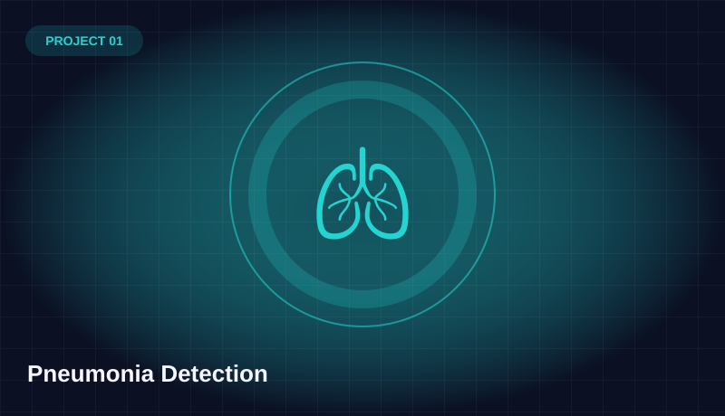
Medical AI
Pneumonia Detection
Chest X-ray classification with EfficientNetB2, class weighting, transfer learning and fine-tuning.
View full case study →Computer Engineering student specializing in Machine Learning, Deep Learning and Computer Vision. I turn complex ideas into practical AI prototypes — from medical imaging to real-time vision applications.
I'm Ahmed Mohamed Sherif, a Computer Engineering undergraduate at Kafr El-Sheikh University, Egypt (expected graduation 2027). My primary focus is building AI systems using machine learning, deep learning and computer vision.
My work spans healthcare imaging, object detection, tracking, pose estimation, generative models and interactive applications. I enjoy moving from experiments to working demos, and learning by building.
Practical builds, coursework experiments, and product concepts. Illustrations are thematic artwork, not actual model outputs or screenshots.

Chest X-ray classification with EfficientNetB2, class weighting, transfer learning and fine-tuning.
View full case study →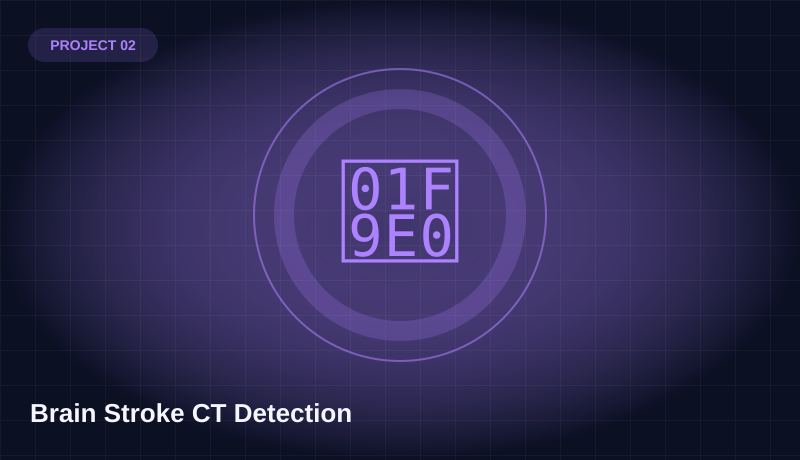
CT image classification using DenseNet / EfficientNet in PyTorch with balanced sampling and augmentation.
View full case study →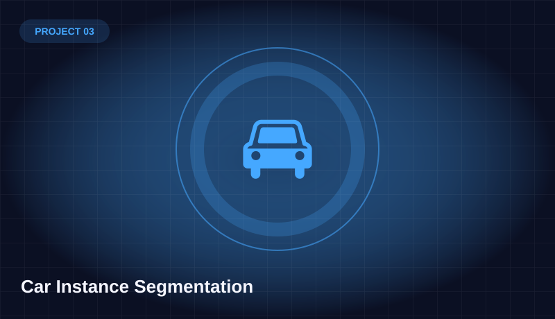
Vehicle segmentation using YOLOv8 segmentation masks on images and video.
View full case study →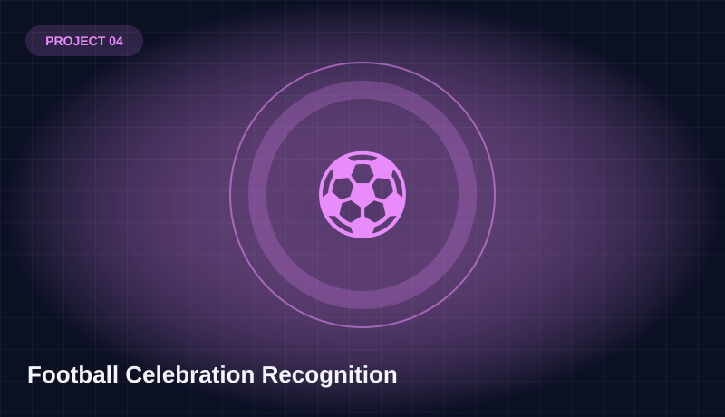
Recognizes football celebration poses from body and hand landmarks without identifying faces.
View full case study →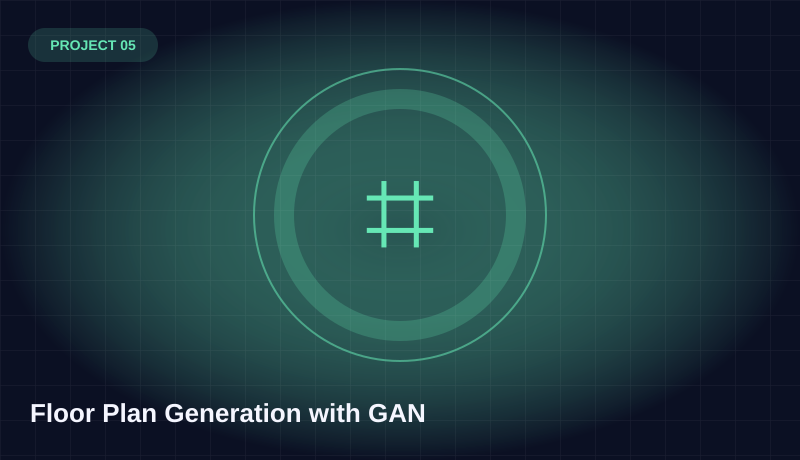
Experiments generating architectural floor plans using the CubiCasa5K dataset.
View full case study →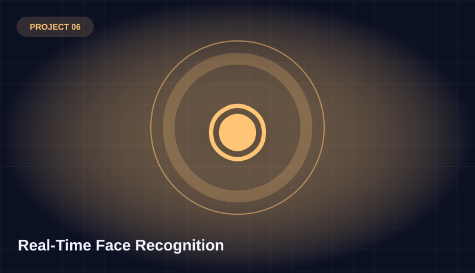
Face detection, embedding comparison and tracking for real-time recognition.
View full case study →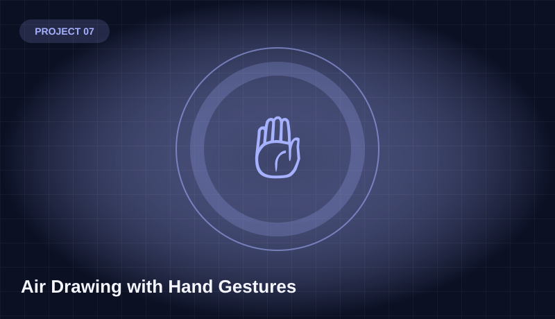
Draw, change colors, select brush size, clear the canvas and annotate images using hand gestures.
View full case study →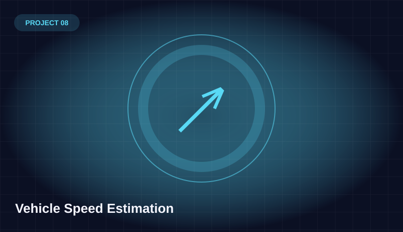
Object detection, tracking and estimated vehicle speeds from video footage.
View full case study →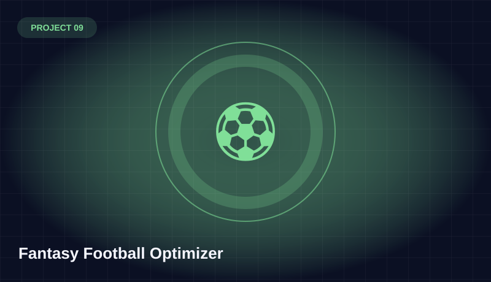
Predictive models and optimization experiments using multi-season Fantasy Premier League player data.
View full case study →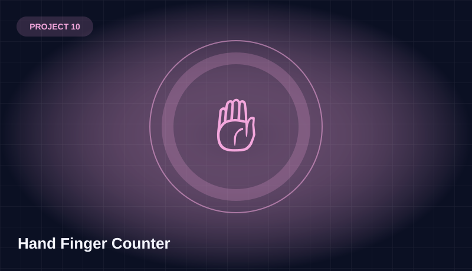
Real-time two-hand landmark tracking and finger counting using a webcam.
View full case study →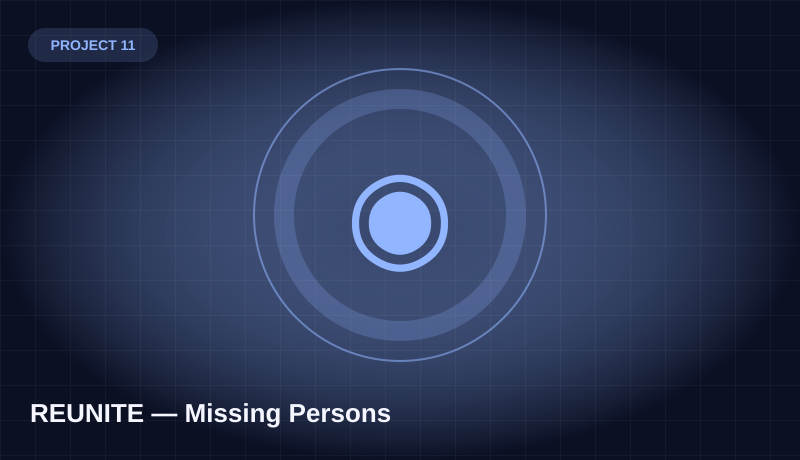
Concept and prototype pipeline for face-embedding matching, alerts and human-reviewed leads.
View full case study →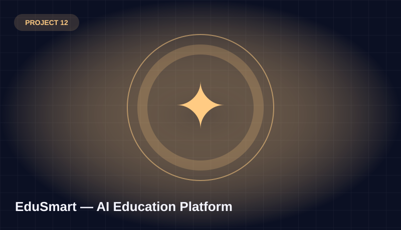
Education platform concept featuring attendance, exam grading, proctoring, chatbot and parent dashboard.
View full case study →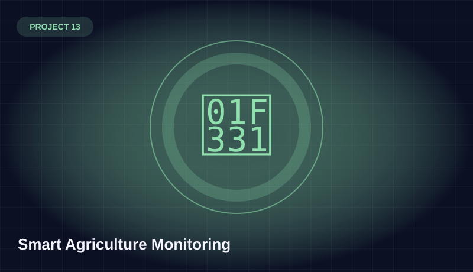
Proposed smart agriculture system for monitoring soil and water parameters and exploring water recycling.
View full case study →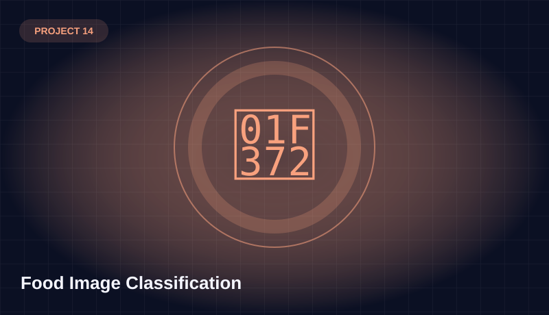
Food classification coursework using a ResNet18 baseline across 15 classes.
View full case study →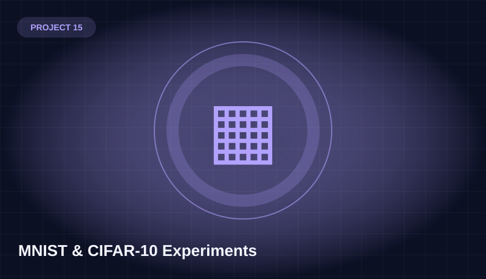
Hands-on neural network and KNN image classification experiments.
View full case study →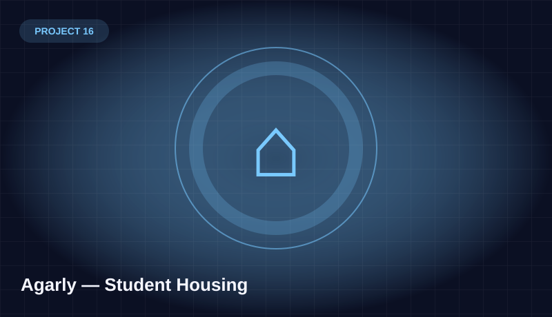
Student housing web application work with React, TypeScript and Supabase.
View full case study →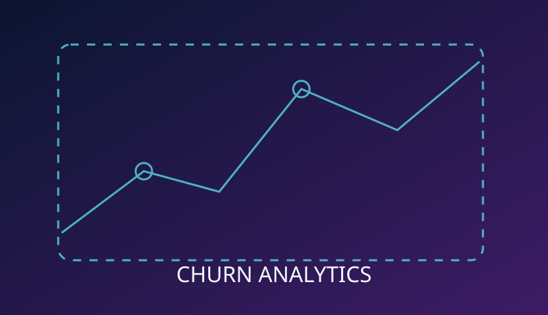
Predictive customer churn modeling using preprocessing, feature engineering and a deep neural network.
View full case study →
Exploratory proposal for an augmented-reality vision-language assistant for industrial maintenance.
View full case study →Interested in source code or a walkthrough? Get in touch, or explore my GitHub profile. Project-specific repository links will be added after verification.
AI-related training and development work, alongside hands-on computer vision and machine learning projects.
AI and Data Science Track — ongoing technical training.
Data science learning program covering practical NumPy and Pandas work.
Experience in visual design, media creation and related creative workflows.
Kafr El-Sheikh University, Egypt. Focused on computer engineering fundamentals and applied AI.
Explored AI for education through the GenAI for Education Hackathon and attended Techne Summit Alexandria.
Feel free to reach out for AI projects, computer vision collaborations, internships or freelance work.